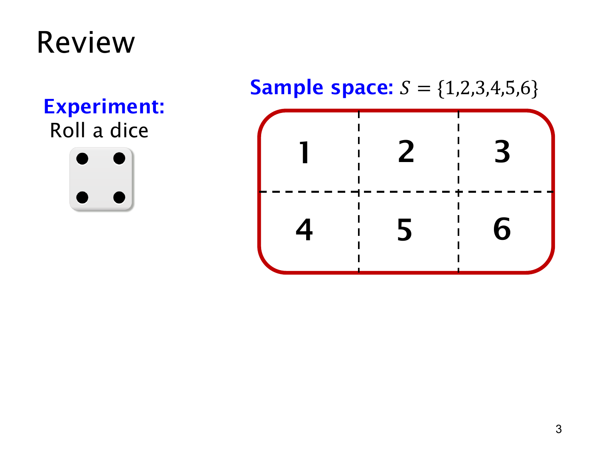

L1.9 · 第 3 页讲解原文
查看这一页课件

用骰子理解样本空间
这页用图片复习“试验”和“样本空间”的区别。左侧的试验是掷一次骰子，图片展示了某次掷出 4 的结果；右侧红框列出全部可能点数：
S={1,2,3,4,5,6}.
样本空间描述可能发生什么，单次结果描述这一次发生了什么。 即使图片中显示 4，也不能把样本空间写成 {4}：其他点数在试验前同样可能出现。
右侧的虚线把六个样本点分开，只是帮助列举。数字所在的图形位置没有概率含义；样本点也不是由它在框内占多大面积来决定概率。
若骰子公平，每个单点事件的概率都为 1/6，例如
p({4})=61.
如果关心“大于 4”，事件是 {5,6}，概率为 2/6=1/3。这里先建立样本空间，再把符合条件的样本点选出来，就是把文字问题转为集合问题的步骤。
“六面骰子”本身只说明有哪些结果；要使用等可能计数，还需要“公平”这一概率模型假设。